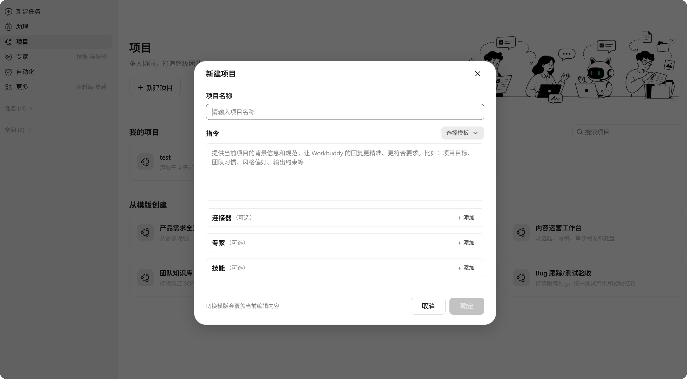
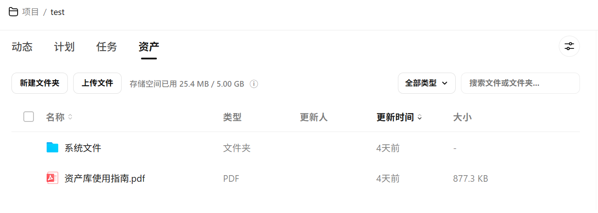
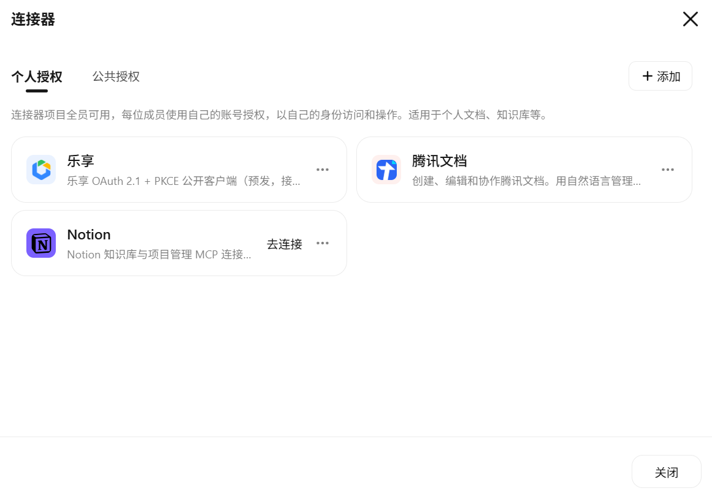
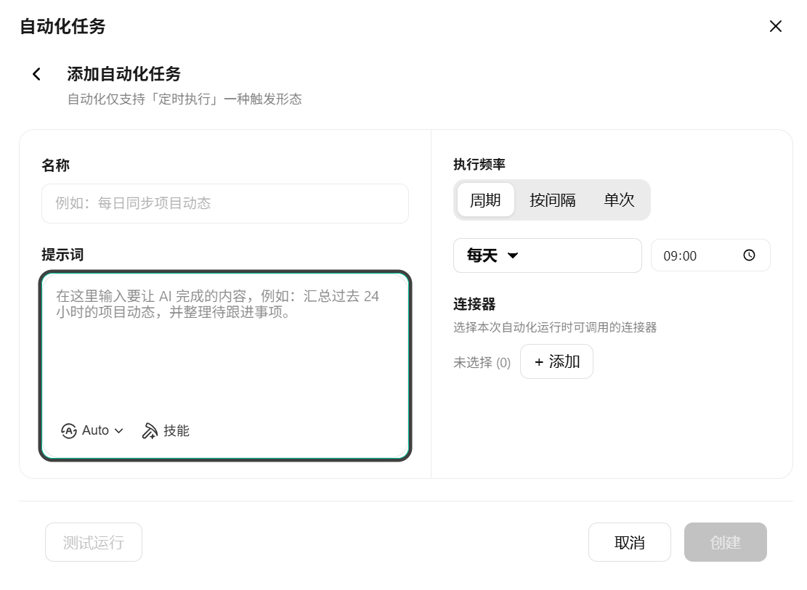
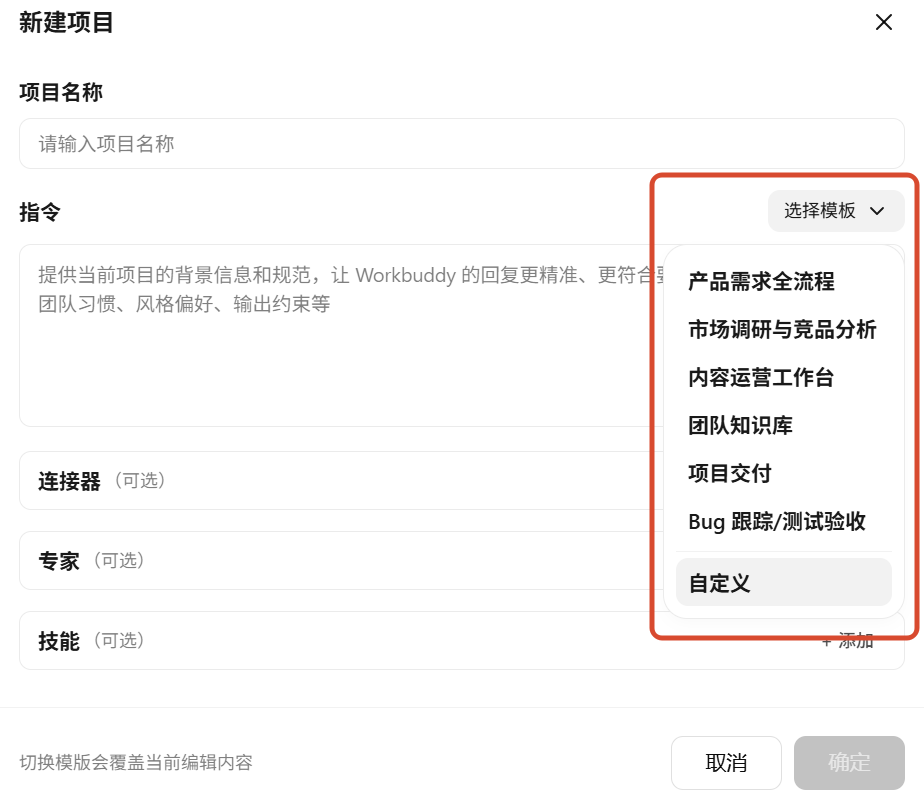
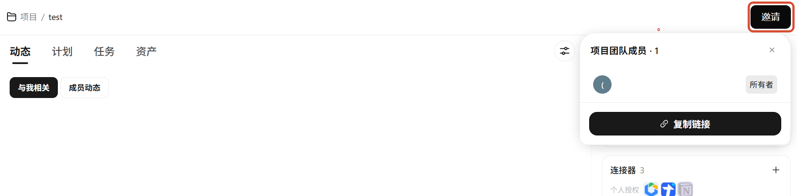
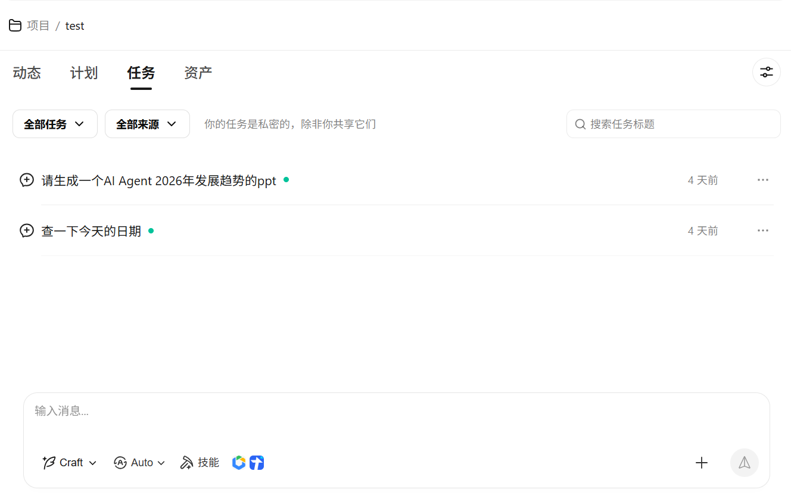
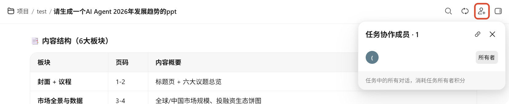
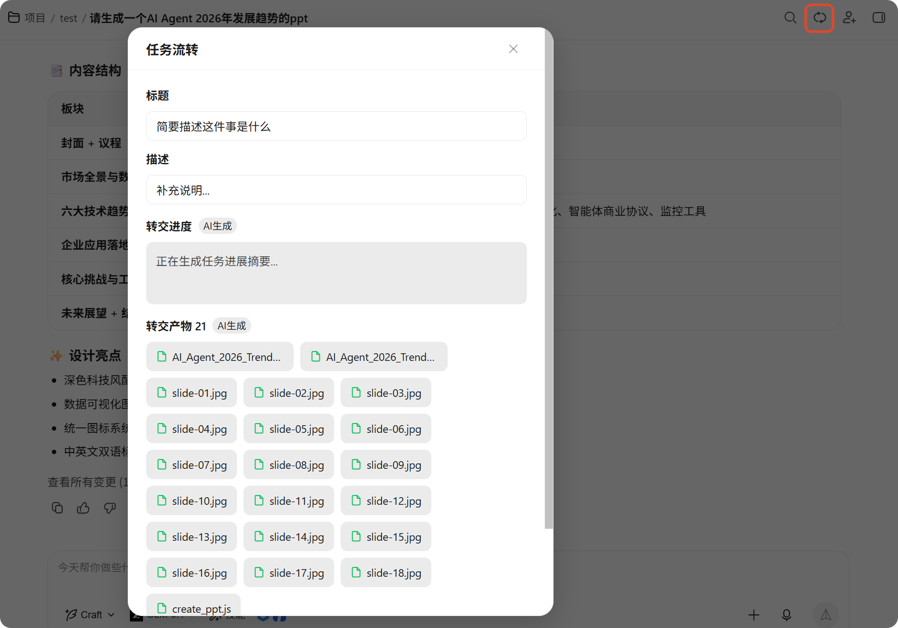
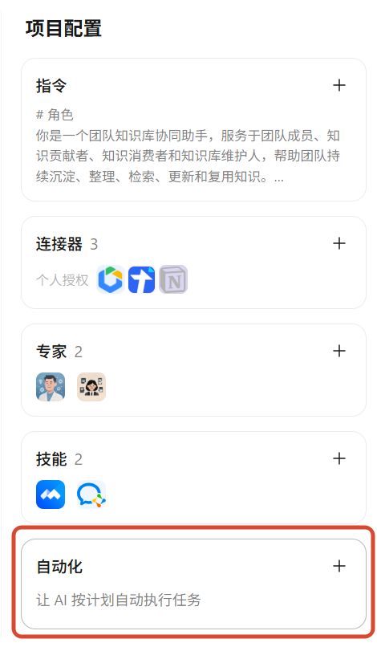

项目
项目功能是 WorkBuddy 的团队协作能力，通过项目和任务两层结构，让团队成员共享上下文、标准与知识，并在具体的工作会话中高效协作。
概述
项目是团队的核心协作阵地。它把指令、连接器、专家、技能和资料统一组织起来，成员在项目中发起任务时，这些共享配置会自动注入，无需每次重复设置。
任务是项目成员在项目中创建的对话会话，支持分享、转交和多人协作三种模式，满足不同场景下的协同需求。
项目配置
项目承载团队的共享上下文与协作规范。项目的公共配置信息包含：
- 名称：项目标识
- 指令：对 AI 的全局行为规则，所有任务自动继承
- 连接器：项目可用的外部服务连接
- 专家：项目可召唤的领域专家
- 技能（Skill）：项目可调用的技能包
成员在项目中创建任务时，WorkBuddy 会自动从项目配置中拉取必要的信息注入到任务上下文。

核心能力
项目动态
项目动态帮助成员及时了解项目内的变化，分为三大类：
| 类别 | 包含的事件 |
|---|---|
| 与我有关 | 别人通过分享弹窗把任务定向分享或转交给我 |
| 成员动态 | 其他成员上传/更新文件、邀请成员、公开任务、增删 Skill/专家/连接器、更改指令等 |
| 自动化 | 自己创建的自动化任务的通知（仅自己可见） |
项目任务
任务是项目成员在项目中创建的对话会话，一个任务对应一个对话和一个工作空间。
产物
任务执行中 Agent 生成的文件制品即为产物。产物的操作权限由任务角色和项目角色叠加决定。
分享
支持将任务通过链接分享给他人。
项目资产
每个项目都有一个项目资产库，支持：
- 成员手动上传内容
- 将任务产物保存到资料库
资料库内容以 RAG 形式注入任务上下文。

连接器
项目里的连接器按授权方式分为两类：
| 授权方式 | 说明 |
|---|---|
| 公共授权 | 管理员配置一次、全员共用同一套票据，适合团队共享的服务账号 |
| 个人授权 | 每位成员各自授权自己的账号，票据不共享，适合个人私有服务 |

TIP
同一个连接器可以同时以两种方式存在。
例如：管理员以团队公共账号配置了飞书（公共授权），成员也可以用自己的飞书账号挂到个人授权里。
自动化
自动化是一种特殊的任务形式，和普通任务一样会跑出一次对话/执行，只是触发方式不是手动发起，而是按预设条件自动触发。
当前仅支持定时执行一种触发形态，到点自动执行一段 prompt 并推送通知。自动化是个人级别的，仅创建者本人可见、可管理。

如何使用
创建项目
- 在左侧导航栏点击项目进入项目页面
- 点击左上角 + 新建项目
- 在弹窗中填写项目配置：
| 配置项 | 说明 |
|---|---|
| 项目名称 | 必填，项目标识 |
| 指令 | 可选，对 AI 的全局行为规则 |
| 连接器 | 可选，项目可用的外部服务，支持公共授权和个人授权 |
| 技能（Skill） | 可选，项目可调用的技能包 |
| 专家 | 可选，项目可召唤的领域专家 |
也可以使用模板创建，覆盖常见的工作场景。在指令上方打开选择模版下拉框，选择预设模板后，表单会自动预填模板中的配置项，你可以在模板基础上继续修改。

管理项目
在客户端项目页面可以查看所有已加入的项目，支持搜索。每个项目卡片点击后进入项目详情页。
邀请成员
- 在项目详情页右上角点击邀请按钮
- 复制链接发送给被邀请人
- 被邀请人点击链接进入申请加入页，填写备注后提交
- 项目管理员在消息中心审批申请
TIP
任何项目成员都可以发起邀请，但最终是否放人进项目由管理员审批决定。

发起任务
在项目详情页底部的任务输入框直接输入即可创建任务。创建任务时，以下内容会自动注入上下文：
- 项目指令：拼入模型上下文
- 项目资料库：以 reference 形式进入
- 个人记忆：拼入上下文
任务中的专家、技能、连接器选择范围如下：
| 配置项 | 选择范围 | 排序规则 |
|---|---|---|
| 专家 | 项目专家 + 个人专家 + 专家中心所有专家 | 项目专家置顶 |
| Skill | 项目 Skill + 已安装的 Skill + 现场导入的 Skill | 项目 Skill 置顶 |
| 连接器 | 已连接的公共授权 + 项目个人授权 + 连接器管理页 | 公共授权置顶 |

分享任务
在任务对话页顶栏点击邀请成员按钮，复制链接发送给他人。成员打开链接即可进入当前任务会话。

任务流转
任务流转是将任务产出物连同上下文一起移交给他人的功能。
在任务对话页顶栏点击流转图标即可发起。流转时，系统会自动打包以下内容：
| 内容 | 说明 |
|---|---|
| 任务产物 | 本次任务中 AI 生成的所有产出文件 |
| 任务进度摘要 | 由 WorkBuddy 自动生成的执行过程总结 |
| 自定义字段 | 任务标题、描述、处理人、状态、截止日期（可编辑） |
| 附加附件 | 可额外上传相关补充材料 |
接收方打开流转内容后，可基于完整的任务上下文继续推进工作，无需重复沟通背景信息。

资产库管理
项目资产（资料库）是项目的统一文件管理中心。所有与项目相关的文档、代码产物、参考资料都可以在这里集中存储和管理，让 WorkBuddy 在执行任务时能直接访问上下文资料。
进入方式：在项目详情页顶部标签栏点击资产。
存储配额
每个项目拥有独立的存储空间（默认 5 GB）。工具栏实时显示已用空间，例如：
存储空间已用 3.6 MB / 5.00 GB
TIP
存储依托腾讯网盘服务，提供基础存储容量 5.00 GB，即将支持容量升级。
文件类型支持
可按以下类别过滤文件：
| 类别 | 说明 | 常见格式 |
|---|---|---|
| 文档 | 文本类文档 | .md .txt .docx |
| 表格 | 结构化数据 | .csv .xlsx |
| 幻灯片 | 演示文稿 | .pptx |
| PDF 文档 | .pdf | |
| 图片 | 图像文件 | .png .jpg .svg .webp |
| 视频 | 视频文件 | .mp4 .webm |
| 音频 | 音频文件 | .mp3 .wav |
| 网站 | 链接收藏 | URL 书签 |
| Markdown | Markdown 专用 | .md |
| 其他 | 不在上述分类的文件 | — |
上传文件
支持多种来源上传文件至资料库：
| 上传来源 | 说明 |
|---|---|
| 本地文件 | 从电脑选择文件直接上传 |
| 产物文件 | 在项目内任务的产物预览中，选择上传到云端即可上传到项目资产 |
更新追踪
文件列表展示每条记录的更新人和更新时间，方便团队了解资料的最新变动情况。这对于多人协作的项目尤为重要。你可以清楚知道"这份需求文档是谁改的"、"那个设计稿是什么时候更新的"。
设置自动化
- 在项目配置进入自动化面板
- 点击 + 添加
- 配置自动化任务：
- 名称
- 提示词
- 执行频率
- 连接器（可选）
自动化在创建者本人的会话中运行，仅创建者可见。

注意事项与重点提示
信息收集与使用
- 项目配置（指令、Skill、专家、连接器）保存在云端中，项目成员共享。
- 个人授权连接器的票据仅保存在成员本地，不上传云端。
- 协作任务中个人授权连接器全部禁用，仅公共授权连接器可用。
数据安全
- 项目资料库内容通过 RAG 形式注入上下文，Agent 也可通过
read-file读取。 - 转交时，原任务的完整上下文（含对话记录、调用记录、中间产物）会被复制到新会话。
- 公共授权连接器的调用日志仅管理员可见，用于审计和合规。
Web 端与客户端差异
- Web 端和客户端的个人 Skill 库互不相通，但项目级 Skill 在云端统一管理，双端一致。
- 云上任务中选不到客户端个人库里的 Skill，只能选到云上个人库里的 Skill，反之亦然。
使用建议
- 项目指令是团队协作的基础，建议在创建项目时明确填写，确保所有成员的任务继承统一的行为规则。
- 公共授权连接器适合团队共享的服务账号，个人授权连接器适合个人私有服务，请根据实际场景选择。
- 协作任务中仅公共授权连接器可用，开启协作前请确认项目已配置必要的公共授权连接器。